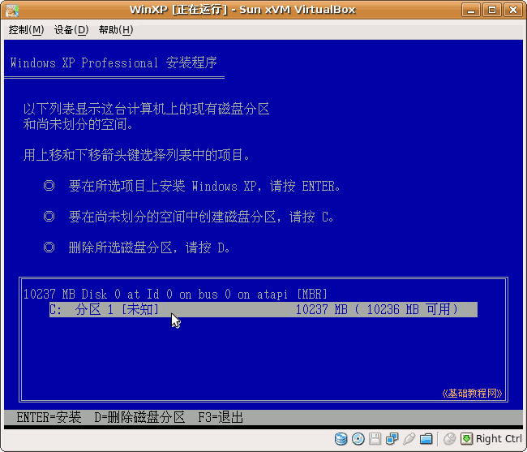
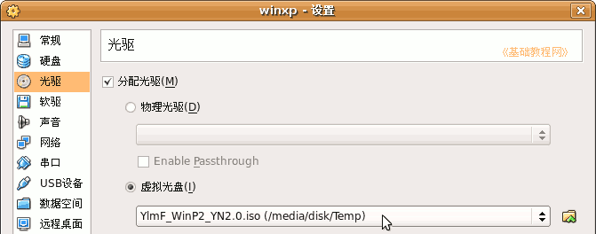
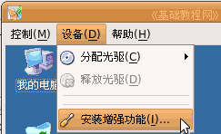
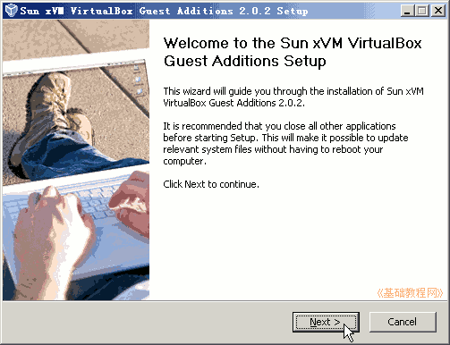
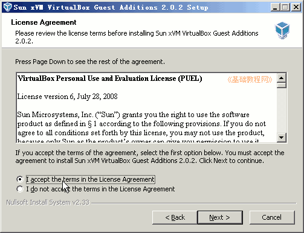
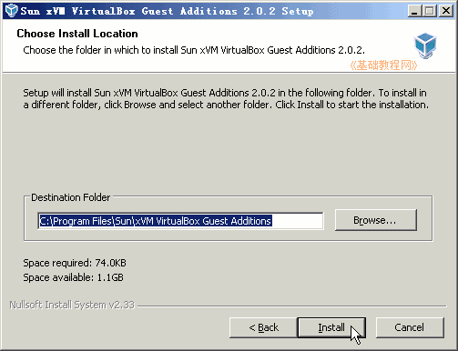
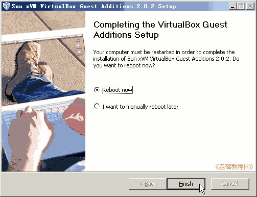

VirtualBox 虚拟机基础入门教程
作者：TeliuTe 来源：基础教程网
五、安装系统 返回目录 下一课设置好虚拟机以后，就可以开始安装XP 系统了，下面我们来看一个练习；
1、原版安装
1）使用XP的安装盘或者镜像文件，一般是采用精简版的XP安装盘，不使用软驱；
2）启动虚拟机后，用光盘启动，然后进入安装程序，跟正常的安装一样，速度有些慢；；

3）详细的安装步骤请参阅相关教程：teliute.org/win/XPsetup/index.htm
2、用GHOST安装盘
1）Ghost是一个系统备份/还原软件，有些XP安装盘也制作成这种方式，可以快速方便地安装系统；
2）放入光盘或设置好光盘映像，然后启动虚拟机；

3）用光盘启动成功后，选择第一项安装，然后耐心等待Ghost恢复成功后重新启动；
4）重新启动后，会继续安装程序，稍等即可完成安装；
3、安装增强功能
1）系统安装好以后，还需要安装增强功能，这样可以更好地发挥设备功能；
2）启动XP系统后，进入桌面，点菜单“设备-安装增强功能”，出来一个安装面板，
如果没有出来，打开“我的电脑”，找到光驱双击手动安装；

3）在出来的安装向导里点“Next”继续下一步；

4）接下来的是许可协议，选上面的“I accept”，点Next继续下一步；

5）接下来点“Install”按钮开始安装，稍等一会；

5）然后出来是否重启的面板，点击“Finish”按钮，重启后完成安装；

重启动以后，鼠标就可以自由在主机和虚拟机之间移动，显卡和共享也可以使用了；
本节学习了VirtualBox中安装XP系统和增强工具的基本操作，如果你成功地完成了练习，请继续学习下一课内容；本教程由86团学校TeliuTe制作|著作权所有
基础教程网：http://teliute.org
美丽的校园……
转载和引用本站内容，请保留版权信息和本站链接。